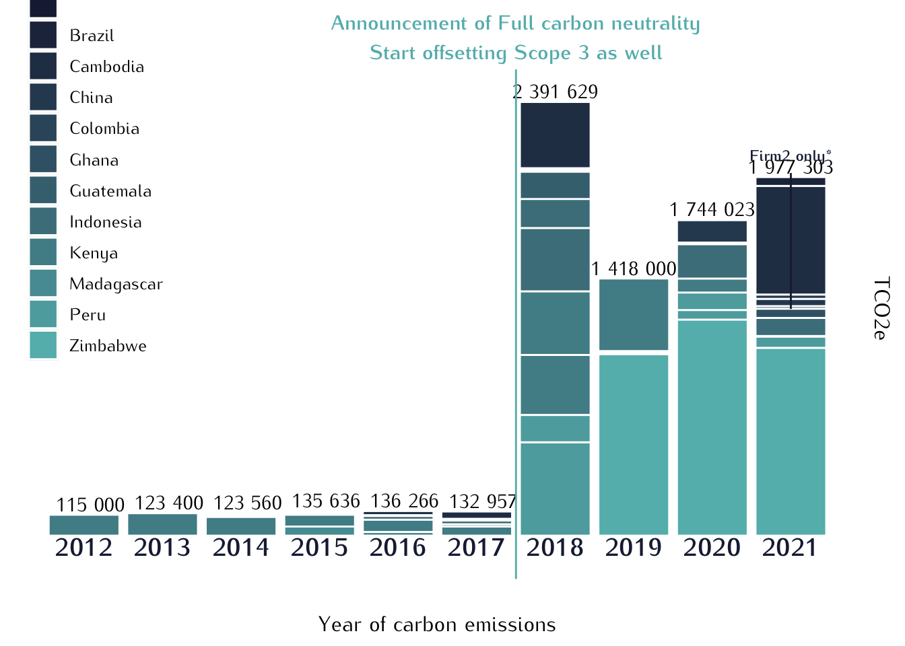
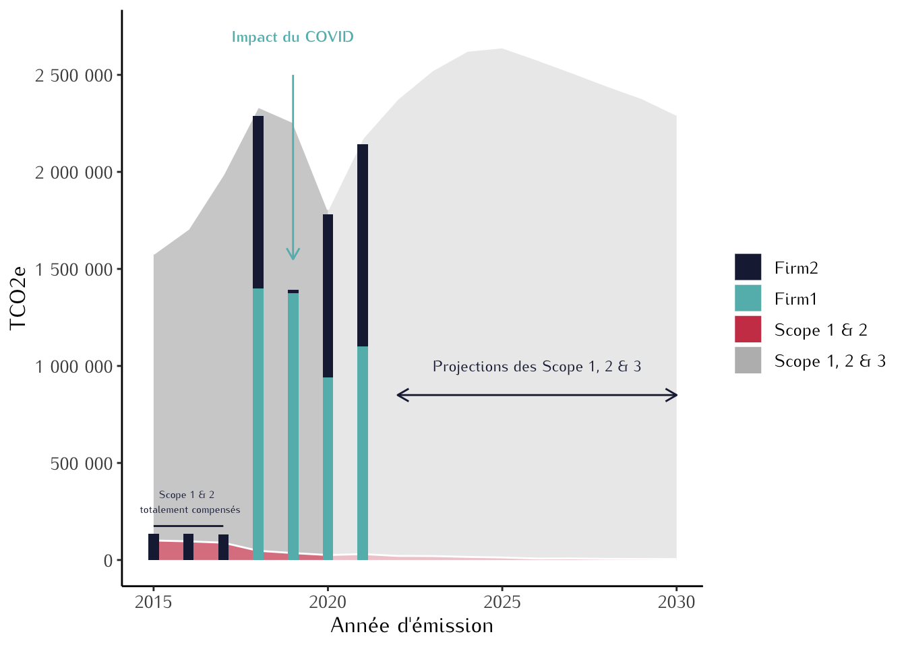
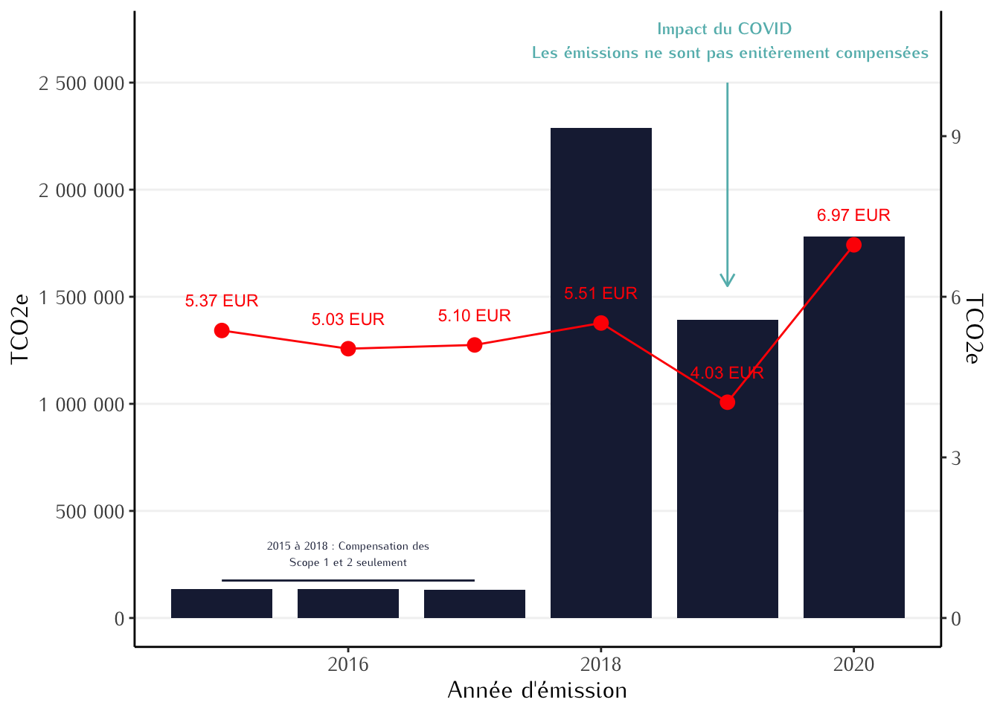
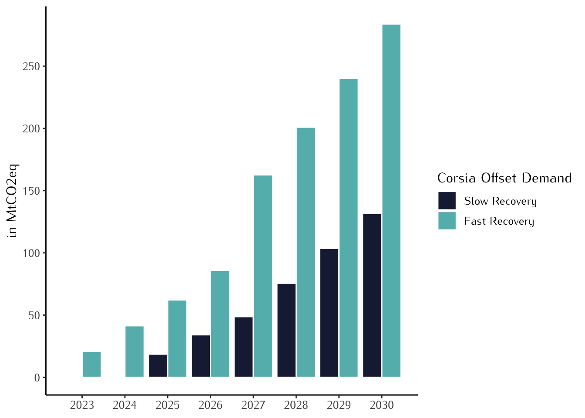
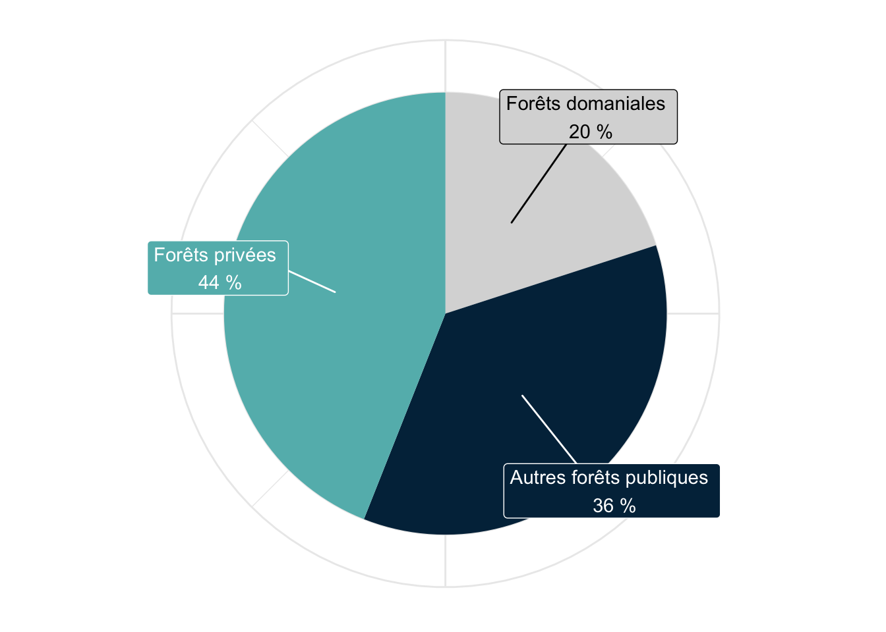
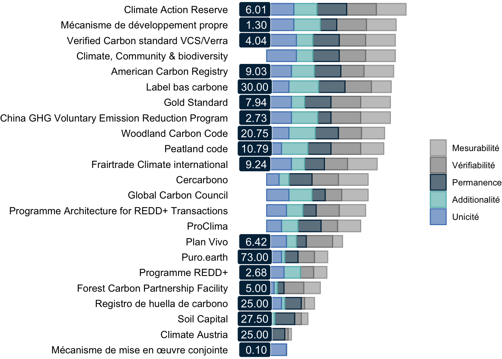
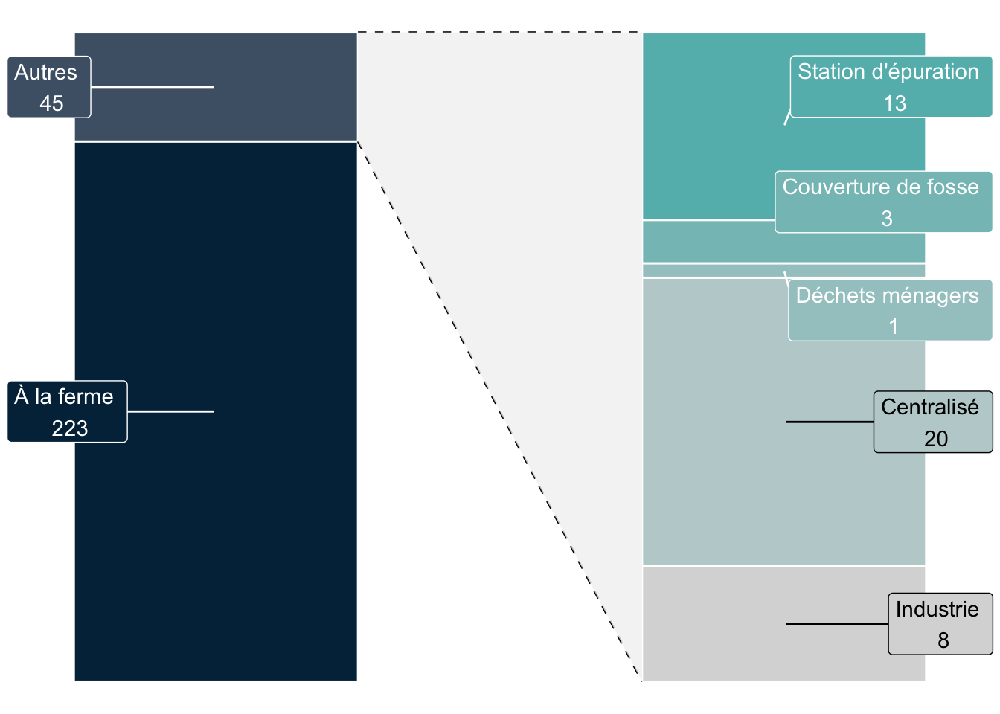
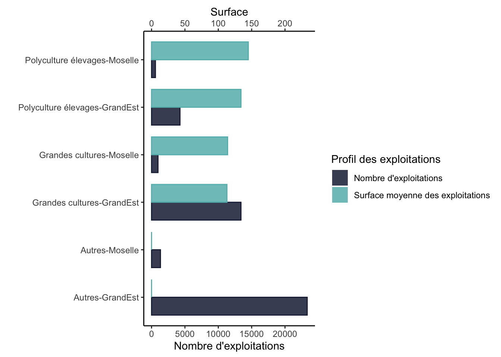

library(ggplot2)
library(reshape2)
library(ggrepel)
library(dplyr)
library(extrafont)
font_import()Importing fonts may take a few minutes, depending on the number of fonts and the speed of the system.
Continue? [y/n] loadfonts()Graphiques Judo Cares
Ce document regroupe l’ensemble des graphiques et leurs codes, utilisés dans les présentations Judo Cares.
Le format EPS est à privilégier dès lors qu’il permet d’alléger les documents et de conserver une sortie entièrement vectorisée.
setEPS(paper="special",width = 8,height = 10,horizontal = T, onefile = FALSE)
postscript(file = "/Users/jeremy/Downloads/stackedPlot.eps")
print(plot3)
dev.off()Dans l’exemple ci-dessus, nous avons une ligne permettant de définir les caractéristiques de la sortie (hauteur, largeur) avant d’écrire le fichier eps du plot3.
library(ggplot2)
library(reshape2)
library(ggrepel)
library(dplyr)
library(extrafont)
font_import()Importing fonts may take a few minutes, depending on the number of fonts and the speed of the system.
Continue? [y/n] loadfonts()tempData <- read.csv(file = paste0(Sys.getenv("HOME"), "/Downloads/situationKili.csv"), header = T, sep = ";")
tempData2 <- melt(tempData[,-grep("X|Methodology|Link", colnames(tempData))], id = c("Country", "Project.Type"))
tempData2$variable <- as.numeric(gsub("Year.", "", tempData2$variable))
tempData2$value <- as.numeric(gsub("_", "", tempData2$value))
print(head(tempData2)) Country Project.Type variable value
1 Kenya Agriculture Forestry and Other Land Use 2012 115000
2 Brazil Agriculture Forestry and Other Land Use 2012 NA
3 Indonesia Agriculture Forestry and Other Land Use 2012 NA
4 Madagascar Agriculture Forestry and Other Land Use 2012 NA
5 Colombia Agriculture Forestry and Other Land Use 2012 NA
6 Cambodia Agriculture Forestry and Other Land Use 2012 NAtextValue <- data.frame(Year = c(2012:2021),
Sum = aggregate(tempData2$value, list(tempData2$variable), sum, na.rm = T)[,2])
colorsCountry <- scales::gradient_n_pal(colours = c("#1B2441", "#64B9B9"), space = c("Lab"))(seq(0,1,length.out = length(unique(tempData$Country))))
ggplot2::ggplot(data = tempData2, aes(x = variable, y = value, fill = Country)) + geom_bar(stat = "identity", color = "white") +
scale_fill_manual(values = colorsCountry) +
scale_y_continuous(position="right") +
labs(y="TCO2e", x = "Year of carbon emissions") +
annotate(geom="text", x = textValue$Year, y = textValue$Sum + 0.025*max(textValue$Sum), label = format(textValue$Sum, big.mark = " ", scientific = F), family = "Kurier") +
annotate(geom="text", x = textValue$Year, y = -0.025*max(textValue$Sum), label = textValue$Year, size = 5, colour = "#1B2441", fontface = "bold", family = "Kurier") +
annotate("segment", x = 2017.5, xend = 2017.5, y = -.1*max(textValue$Sum), yend = 1.075*max(textValue$Sum), colour = "#64B9B9")+
annotate("text", x = 2017.5,y = 1.15*max(textValue$Sum), label = "Announcement of Full carbon neutrality\nStart offsetting Scope 3 as well", colour = "#64B9B9", family = "Kurier", fontface = "bold", size = 4)+
annotate("segment", x = 2021, xend = 2021, y = 1250000, yend = 2e6, colour = "#1B2441")+
annotate("text", x = 2021,y = 2.1e6, label = "Firm2 only*", colour = "#1B2441", family = "Kurier", fontface = "bold", size = 3)+
theme(text=element_text(family="Kurier", size=12),
legend.position = c(.1,.75),
panel.border = element_blank(),
axis.text=element_blank(),
axis.ticks=element_blank(),
panel.grid.major = element_blank(),
panel.grid.minor = element_blank(),
panel.background = element_rect(fill='transparent', colour='transparent'))
tempData <- read.csv(file = paste0(Sys.getenv("HOME"), "/Downloads/kiliSituation2-2.csv"), header = T, sep = ";")
tempData1 <- melt(tempData[,c("Year", "scope12","scope123")], id = c("Year"))
tempData2 <- melt(tempData[,c("Year", "firm1Cost", "firm2Cost")], id = c("Year"))
tempData3 <- melt(tempData[,c("Year","firm2Purchase", "firm1Purchase")], id = c("Year"))
tempData4 <- melt(tempData[,c("Year","firm2Purchase", "firm1Purchase")], id = c("Year"))
tempData1$value <- as.numeric(gsub(" ", "", tempData1$value))
tempData2$value <- as.numeric(gsub(" €", "", gsub(" ", "", tempData2$value)))
tempData3$value <- as.numeric(gsub(" €", "", gsub(" ", "", tempData3$value)))
tempData4$value <- as.numeric(gsub(" €", "", gsub(" ", "", tempData4$value)))
tempData1$variable <- factor(tempData1$variable, levels = c("scope123", "scope12"))
tempData3$variable <- factor(tempData3$variable, levels = c("firm1Purchase","firm2Purchase"))
print(head(tempData1)) Year variable value
1 2015 scope12 100635
2 2016 scope12 96113
3 2017 scope12 89200
4 2018 scope12 47540
5 2019 scope12 35728
6 2020 scope12 25527print(head(tempData3)) Year variable value
1 2015 firm2Purchase NA
2 2016 firm2Purchase NA
3 2017 firm2Purchase NA
4 2018 firm2Purchase 1400000
5 2019 firm2Purchase 1375600
6 2020 firm2Purchase 939359ggplot2::ggplot()+
geom_area(data = tempData1[which(tempData1$Year <= 2020),], aes(x = Year, y = value, fill = variable), stat = "identity", color = "white", alpha = .7) +
geom_area(data = tempData1[which(tempData1$Year >= 2020),], aes(x = Year, y = value, fill = variable), stat = "identity", color = "white", alpha = .3) +
geom_bar(data = tempData3, aes(x = Year, y = value, fill = variable), size = 1, alpha = 1, width = .3, stat="identity") +
scale_fill_manual(values = c("#1B2441", "#64B9B9","#CE4257", "#BBBBBB"), name = "", labels = c("Firm2", "Firm1", "Scope 1 & 2", "Scope 1, 2 & 3")) +
scale_y_continuous(breaks = seq(0,2.5e6,500000), labels = format(seq(0,2.5e6,500000), big.mark = " ", scientific = F)) +
annotate("text", x = 2019, y = 2.7e6, label = "Impact du COVID", colour = "#64B9B9", family = "Kurier", fontface = "bold", size = 3) +
geom_segment(aes(x = 2019, y = 2.5e6, xend = 2019, yend = 1.55e6), arrow = arrow(length = unit(.25, "cm")), colour = "#64B9B9") +
annotate("text", x = 2016, y = 300000, label = "Scope 1 & 2 \n totalement compensés", colour = "#1B2441", family = "Kurier", size = 2) +
geom_segment(aes(x = 2015, y = 175000, xend = 2017, yend = 175000), colour = "#1B2441") +
annotate("text", x = 2026, y = 1000000, label = "Projections des Scope 1, 2 & 3", colour = "#1B2441", family = "Kurier", size = 3) +
geom_segment(aes(x = 2022, y = 850000, xend = 2030, yend = 850000), colour = "#1B2441", arrow = arrow(ends='both', length = unit(.25, "cm"))) +
theme_classic() +
labs(x = "Année d'émission", y = "TCO2e") +
theme(text=element_text(family="Kurier", size=12),
legend.position = "right",
panel.border = element_blank(),
# axis.title=element_blank(),
axis.text=element_text(family="Kurier", size=10),
panel.grid.major = element_blank(),
panel.grid.minor = element_blank(),
panel.background = element_rect(fill='transparent', colour='transparent'))
tempData3bis <- tempData3[which(tempData3$Year < 2021),]
tempDataPrice <- data.frame(Year = c(2015:2020),
Price = c(5.37, 5.03, 5.10, 5.51, 4.03, 6.97))
print(head(tempData3bis)) Year variable value
1 2015 firm2Purchase NA
2 2016 firm2Purchase NA
3 2017 firm2Purchase NA
4 2018 firm2Purchase 1400000
5 2019 firm2Purchase 1375600
6 2020 firm2Purchase 939359print(head(tempDataPrice)) Year Price
1 2015 5.37
2 2016 5.03
3 2017 5.10
4 2018 5.51
5 2019 4.03
6 2020 6.97ggplot2::ggplot()+
geom_bar(data = tempData3bis, aes(x = Year, y = value), fill = "#1B2441", size = 1, alpha = 1, width = .8, stat="identity") +
geom_line(data = tempDataPrice, aes(x = Year, y = Price*250000), color = "red") +
geom_point(data = tempDataPrice, aes(x = Year, y = Price*250000), color = "red", size = 3) +
geom_text(data = tempDataPrice, aes(x = Year, y = Price*250000, label = paste(format(Price, digits = 2, nsmall = 2), "EUR")), color = "red", size = 3, vjust = -2) +
scale_y_continuous(breaks = seq(0,2.5e6,500000), labels = format(seq(0,2.5e6,500000), big.mark = " ", scientific = F), sec.axis = sec_axis(~ . / 250000, name = derive())) +
annotate("text", x = 2019, y = 2.7e6, label = "Impact du COVID \n Les émissions ne sont pas enitèrement compensées", colour = "#64B9B9", family = "Kurier", fontface = "bold", size =3) +
geom_segment(aes(x = 2019, y = 2.5e6, xend = 2019, yend = 1.55e6), arrow = arrow(length = unit(.25, "cm")), colour = "#64B9B9") +
annotate("text", x = 2016, y = 300000, label = "2015 à 2018 : Compensation des\nScope 1 et 2 seulement", colour = "#1B2441", family = "Kurier", size = 2) +
geom_segment(aes(x = 2015, y = 175000, xend = 2017, yend = 175000), colour = "#1B2441") +
theme_classic() +
labs(x = "Année d'émission", y = "TCO2e") +
theme(text=element_text(family="Kurier", size=12),
legend.position = "right",
panel.border = element_blank(),
# axis.title=element_blank(),
axis.text=element_text(family="Kurier", size=10),
legend.title= element_blank(),
panel.grid.major.y = element_line(colour="#F2F2F2"),
panel.grid.minor = element_blank(),
panel.background = element_rect(fill='transparent', colour='transparent'))
tempCorsiaDemand <- readxl::read_xlsx(path = paste0(Sys.getenv("HOME"), "/Downloads/dataClearBlueCorsia.xlsx"), sheet = 1) %>% as.data.frame()
tempCorsiaDemand <- melt(tempCorsiaDemand, id = "Year")
ggplot2::ggplot(data = tempCorsiaDemand, aes(x = Year, group = variable, fill = variable, color = variable, y = value)) +
geom_bar(stat="identity", position = position_dodge(), color = "white") +
theme_classic() +
scale_fill_manual(name = "Corsia Offset Demand", values=c("#1B2441", "#64B9B9"), labels = c("Slow Recovery", "Fast Recovery")) +
scale_x_continuous(breaks = 2023:2030) +
scale_y_continuous(breaks = seq(0,300,50)) +
labs(y = "in MtCO2eq") +
theme(text=element_text(family="Kurier", size=12),
legend.position = "right",
axis.title.x=element_blank(),
axis.text.x=element_text(family="Kurier", size=10),
panel.background = element_rect(fill='transparent', colour='transparent'))
library(ggplot2)
library(ggrepel)
dataGraph3 <- data.frame(nom=c("Forêt domaniale", "Autres forêts publiques","Forêts privées"), value =c(0.2,0.36,0.44))
dataGraph3$nom <- factor(dataGraph3$nom,
levels = c("Forêts privées", "Autres forêts publiques","Forêt domaniale"))
dataGraph3[,"breaks"] <- cumsum(c(0, dataGraph3$value[-length(dataGraph3$value)])) +
(cumsum(dataGraph3$value) - cumsum(c(0, dataGraph3$value[-length(dataGraph3$value)]))) / 2
ggplot2::ggplot(data=dataGraph3,aes(x=1,y=value))+
geom_bar(aes(fill = nom), stat="identity", width = 1, show.legend = FALSE) +
geom_label_repel(aes(label = paste(nom, "\n", 100*value, "%") , y = breaks, fill = nom), color = c("black", "white", "white"), nudge_x = .6) +
scale_fill_manual(values = c("#64B9B9","#012D48","#D9D9D9")) +
coord_polar(theta = "y") +
theme_minimal() +
theme(axis.title = element_blank(),
axis.text = element_blank(),
legend.position = "none")
library(ggplot2)
temp_data<-data.frame(nom=c("ReGazel","ReEdf","RE aéronefs 20%","RE aéronefs 50%","RE aéronefs 100%", "Stock"),
label = c("Besoin RE Gazel estimé \n 1 000 000", "Besoin RE Gazel estimé \n 2 000 000", "20%", "50%", "100%", "1 129 874"),
type = c(rep("Demande pour \n l'exercice 2022", 5), "Stock de RE LBC \n disponible émis depuis 2015"),
value=c(1000000,2000000,290000,580000,580000, 1129874))
temp_data[,"cumValue"] <- c(temp_data$value[1]/2, (temp_data$value[2:5]/2) + cumsum(temp_data$value[1:4]), temp_data$value[length(temp_data$value)]/2)
temp_data$nom <- factor(temp_data$nom,
levels = c("RE aéronefs 100%", "RE aéronefs 50%","RE aéronefs 20%","ReEdf","ReGazel", "Stock"))
ggplot2::ggplot(data=temp_data)+
geom_bar(aes(x = type, y = value, fill = nom, color = nom), stat="identity") +
scale_fill_manual(values = c("#D9D9D9","#A6A6A6","#7F7F7F","#012D48","#64B9B9", "#4F81BD")) +
scale_color_manual(values = c("#D9D9D9","#A6A6A6","#7F7F7F","#012D48","#64B9B9", "#4F81BD")) +
geom_text(aes(x = type, y = cumValue, label = label), color = c("white","white","black","black","black", "white")) +
geom_hline(yintercept = temp_data$value[1], color = "white", linetype = "dashed") +
scale_y_continuous(name = "tCO2eq", breaks = seq(0,5*10^6,5*10^5), labels = format(seq(0,5*10^6,5*10^5), scientific = F, big.mark = " ")) +
geom_segment(aes(x = 1.5, xend = 1.5, y = 3145000, yend = 4160000)) +
geom_point(aes(x = 1.5, y = c(3145000)), stat = "identity") +
geom_point(aes(x = 1.5, y = c(4160000)), stat = "identity") +
geom_text(aes(x = 2, y = (4160000+3145000)/2), label = "Besoin RE transport aérien \n intérieur estimé \n 1 450 000 tCO2eq max*", color = "black") +
theme_void() +
theme(axis.text.x = element_text(size = 11, angle = 0, vjust = 0.85, hjust=0.75),
axis.text.y = element_text(size = 11, angle = 0, vjust = 0, hjust=0),
legend.position = "none")
library(dplyr)
tempData <- readxl::read_xlsx(path = paste0(Sys.getenv("HOME"), "/Downloads/EtudeStandards.xlsx"), sheet = "brut")
tempData[,"Sum"] <- rowSums(tempData[,c("Mesurabilité", "Vérifiabilité", "Additionalité", "Permanence", "Unicité")])
colnames(tempData)[1] <- "Name"
tempData$Name <- factor(tempData$Name,
levels = tempData$Name[order(tempData$Sum)])
# tempData$Additionalité <- -tempData$Additionalité
dataPlot <- reshape2::melt(tempData, id = "Name") %>% filter(variable != "Prix à la tonne" & variable != "Note moyenne"& variable != "Sum")
dataPrice <- reshape2::melt(tempData, id = "Name") %>% filter(variable == "Prix à la tonne")
# ---- création du plot ---- #
library(ggplot2)
ggplot2::ggplot(data=dataPlot) +
geom_bar(aes(x = Name, y = value, group = variable, color = variable, fill = variable), alpha = .65, stat = "identity", position = "stack", width = 0.75) +
scale_fill_manual(values = c("#A6A6A6","#7F7F7F","#012D48","#64B9B9", "#4F81BD")) +
scale_color_manual(values = c("#A6A6A6","#7F7F7F","#012D48","#64B9B9", "#4F81BD")) +
geom_label(data = dataPrice[which(is.na(dataPrice$value) == F),], aes(x = Name, y = -.4, label = format(value, nsmall = 2, digits = 2)), fill = "#012D48", color = "white") +
# geom_segment(data = dataPrice, aes(x = Name, xend = Name, y = 0, yend = value/10), color="red") +
ylim(c(-1,max(5*dataPlot$value))) +
theme_void() +
theme(axis.text.x = element_blank(),
axis.text.y = element_text(hjust=1, size = 10),
legend.position = "right",
legend.title = element_blank()) +
coord_flip()# ========= 3ème graphique =========== #
dataGraph4 <- data.frame(nom=c("À la ferme", "Industrie","Centralisé","Déchets ménagers","Couverture de fosse","Station d'épuration"), value = c(223,8,20,1,3,13))
dataPlot.premierebarre <- data.frame(nom = c("À la ferme", "Autres"),
value = c(223, sum(dataGraph4$value)-223))
dataPlot.premierebarre[,"value2"] <- dataPlot.premierebarre$value / sum(dataPlot.premierebarre$value)
dataPlot.premierebarre$nom <- factor(dataPlot.premierebarre$nom,
levels = rev(c("À la ferme", "Autres")))
dataPlot.secondebarre <- dataGraph4[-1,]
dataPlot.secondebarre[,"value2"] <- dataPlot.secondebarre$value / sum(dataPlot.secondebarre$value)
dataPlot.secondebarre$nom <- factor(dataPlot.secondebarre$nom,
levels = rev(dataPlot.secondebarre$nom))
dataPlot.premierebarre[,"breaks"] <- 0.5*(cumsum(c(0, dataPlot.premierebarre$value2[-length(dataPlot.premierebarre$value2)])) + cumsum(dataPlot.premierebarre$value2))
dataPlot.secondebarre[,"breaks"] <- 0.5*(cumsum(c(0, dataPlot.secondebarre$value2[-length(dataPlot.secondebarre$value2)])) + cumsum(dataPlot.secondebarre$value2))
library(ggrepel)
ggplot2::ggplot()+
geom_bar(data = dataPlot.premierebarre, aes(x = 1, y = value2), color = "white", fill = c("#012D48", "#4E6176"), stat="identity", width = 1, show.legend = FALSE) +
geom_bar(data = dataPlot.secondebarre, aes(x = 3, y = value2), color = "white", fill = c("#D9D9D9", "#BED1D1", "#A3C9C9", "#85C1C1", "#64B9B9"), stat="identity", width = 1, show.legend = FALSE) +
geom_segment(aes(x = 1.5, xend = 2.5, y = dataPlot.premierebarre$value2[1], yend = 0), linetype = "dashed") +
geom_segment(aes(x = 1.5, xend = 2.5, y = 1, yend = 1), linetype = "dashed") +
geom_ribbon(aes(x=c(1.5, 2.5), ymin = c(dataPlot.premierebarre$value2[1], 0), ymax = c(1, 1)), fill = "#f2f2f2", alpha = .8) +
geom_label_repel(data = dataPlot.premierebarre, aes(x = 1, label = paste(nom, "\n", value) , y = breaks), fill = c("#012D48", "#4E6176"), color = c("white", "white"), nudge_x = -0.6) +
geom_label_repel(data = dataPlot.secondebarre, aes(x = 3, label = paste(nom, "\n", value) , y = breaks), fill = c("#D9D9D9", "#BED1D1", "#A3C9C9", "#85C1C1", "#64B9B9"), color = c("black", "black", "white","white","white"), nudge_x = 0.6) +
theme_void() +
theme(axis.title = element_blank(),
axis.text = element_blank(),
legend.position = "none")
dataGraph5 <- data.frame(nom=c("Grandes cultures","Polyculture élevages","Autres"),
nombre=c(13400,4261,23328),
surface=c(113,134,0))
ggplot2::ggplot(data=dataGraph5) +
geom_bar(aes(x=nom,y=nombre), alpha = .65, stat = "identity", position = "stack", width = 0.75)+
geom_bar(aes(x=nom,y=surface / 0.01), fill = "red", alpha = .65, stat = "identity", position = "stack", width = 0.4)+
scale_y_continuous(name="Nombre d'exploitations", sec.axis = sec_axis( trans=~.*0.01, name="Surface moyenne en ha"))+
coord_flip()